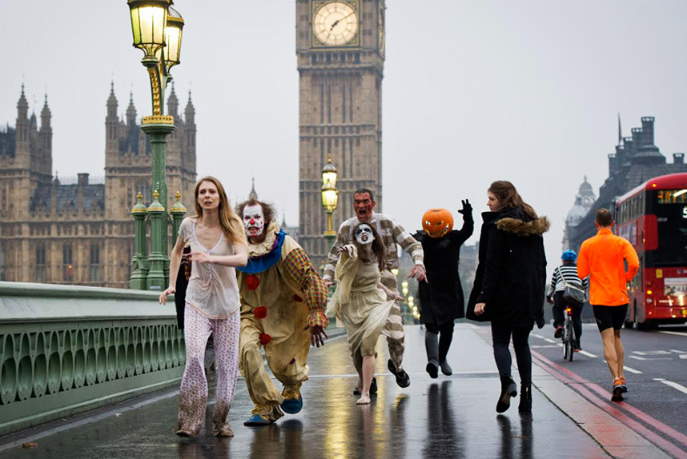

Reino Unido

contexto historico
O Halloween no Reino Unido tem raízes profundas em tradições antigas, com destaque para o festival celta de Samhain, que marcava o fim da colheita e a entrada no inverno. Nesse festival, acreditava-se que o véu entre os vivos e os mortos se tornava mais tênue, permitindo que os espíritos retornassem à Terra. Com a conquista romana das terras celtas, elementos das festas romanas, como o Feralia (homenagem aos mortos) e Pomona (deusa das frutas), se misturaram com as tradições locais.
Com a cristianização, o Dia de Todos os Santos (1º de novembro) foi estabelecido, e a noite anterior ficou conhecida como All Hallows' Eve, que deu origem ao nome Halloween. No século XIX, o costume de "guising" (disfarces e pedidos de comida) e a tradição de Jack-o'-lantern começaram a se espalhar, em parte devido à imigração irlandesa. O Halloween foi evoluindo ao longo do tempo e, no século XX, com a globalização e a influência americana, tornou-se amplamente popular no Reino Unido, especialmente entre as crianças.
Como e celebrado no Reino Unido
Decoraçao de casa
Muitas casas são decoradas com temas de Halloween, como teias de aranha falsas, esqueletos, fantasmas e abóboras esculpidas (Jack-o'-lanterns). Luzes e decoração de fantasmas e monstros também são comuns.
.jpg)
"Trick-or-Treating" (Doces ou Travessuras)
Crianças se fantasiam e vão de porta em porta, pedindo doces. A expressão "trick-or-treat" é amplamente usada. O ato de pedir doces é mais comum nas grandes cidades, embora em áreas mais rurais seja menos frequente.
.jpg)
Festas a Fantasia
As festas de Halloween, tanto para crianças quanto para adultos, são populares, com temas de fantasmas, monstros e personagens assustadores. As pessoas se vestem com fantasias criativas e participam de jogos e danças.
.jpg)
Maçãs e Brincadeiras Tradicionais
Algumas crianças ainda participam de jogos tradicionais, como bob for apples (onde se tenta pegar maçãs com a boca em uma bacia com água) e dunking (jogo semelhante com maçãs flutuando).
.jpg)
Cinema e Midia
Filmes de terror e programas de TV com temática de Halloween são exibidos, e muitos cinemas fazem exibições especiais de filmes de terror clássicos.
.jpg)
Comida e Bebida Temática
Doces típicos de Halloween, como toffee apples (maçãs carameladas) e pumpkin pie (torta de abóbora), são populares. Bebidas e comidas temáticas também são preparadas em festas, como cupcakes com coberturas de aranhas ou fantasmas.
.jpg)
Eventos em Parques e Casas Assombradas
Muitos parques de diversão e atrações turísticas no Reino Unido organizam eventos de Halloween, como casas mal-assombradas, passeios noturnos assustadores e apresentações temáticas, com atores fantasiados para criar uma atmosfera de terror.
.jpg)
Tradições de Espíritos
Alguns ainda mantêm rituais mais ligados ao folclore, como contar histórias de fantasmas, visitar cemitérios ou realizar pequenas cerimônias para "afastar" maus espíritos.
Exemplo
Um exemplo da tradição de espíritos no Halloween no Reino Unido é a prática de contar histórias de fantasmas ou participar de passeios noturnos em locais históricos, onde as pessoas podem ouvir relatos de assombrações e fenômenos sobrenaturais. Esses eventos costumam ser realizados em locais com uma forte conexão histórica, como castelos, mansões antigas ou cemitérios.
Um exemplo específico é o Ghost Walks (passeios de fantasmas) em cidades como Edimburgo ou York, que são famosas por suas lendas e histórias de espíritos. Durante o Halloween, esses passeios noturnos se tornam ainda mais populares. Guias especializados conduzem os visitantes por ruas antigas e pontos turísticos macabros, narrando histórias assustadoras sobre fantasmas, assassinatos históricos ou eventos inexplicáveis que supostamente ocorreram nos locais visitados.
.jpg)